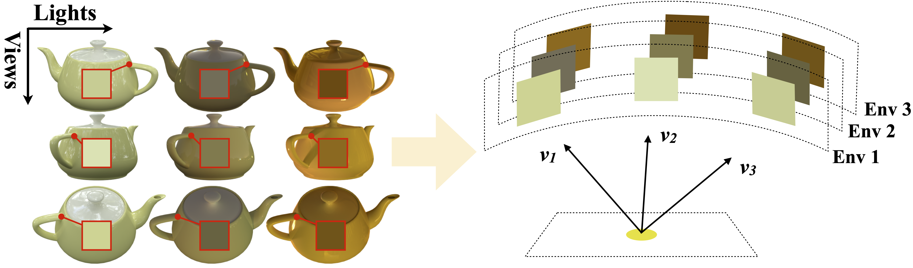

The same object position can display a range of pixel colors depending on viewing direction and lighting. Unlike existing methods, we explicitly model light dependent appearances with multiple learnable environment maps.
Motivation
Existing methods enabled relighting of Gaussians using explicit shading functions and learnable lighting representations, often in the form of environment maps. However, these methods often fail to produce faithful relights with only single-environment captures as inputs.
Due to the albedo-lighting ambiguity, where changes in surface albedo are indistinguishable from changes in lighting intensity, the learned environments are often observed to be tinted with object colors, shifted in tone, scaled in intensity or filled with noise. Without proper constraints, these maps act as sinks for unmodeled residual terms during optimization, lacking physical correspondence with the actual environment maps used for relighting.


Learned environment maps
Inspired by photometric appearance modeling, we propose ReCap to leverage object captures across unknown lighting conditions, modeling light-dependent appearances with multiple environment maps that share a common Gaussian model. Conceptually, this resembles multi-task learning, where the learned environment maps act as task heads querying a shared material representation for varied object appearances.